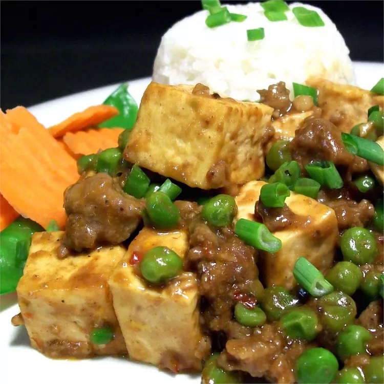

Ma Po Tofu

Description
Mapo tofu is a popular Chinese dish from Sichuan province. It consists of tofu set in a spicy sauce, typically a
thin, oily, and bright red suspension, based on douban, and douchi, along with minced meat, traditionally beef.
Ingredients
- 4 ounces ground pork
- 2 tablespoons dry sherry
- 1 teaspoon cornstarch
- ½ tablespoon fermented black beans, rinsed and mashed
- ½ tablespoon chili paste with garlic
- 1 teaspoon cayenne pepper
- 2 tablespoons soy sauce
- 3 cloves garlic, crushed
- ½ teaspoon minced fresh ginger
- 1 (14 ounce) package tofu, drained and cut into cubes
- 1 cup frozen green peas
- ½ cup chicken broth
- 1 tablespoon cornstarch, mixed with equal parts water
Steps
- In a small bowl, combine ground pork, sherry and 1 teaspoon cornstarch; set aside.
- In a separate small bowl, combine black beans, chile paste, cayenne pepper, soy sauce, garlic, and ginger;
set aside.
- Heat a large skillet over medium heat. If pork is lean, add 1 tablespoon oil. Cook pork until evenly
browned. Stir in black bean mixture, tofu, and peas. Pour in chicken broth, and bring to a boil. Stir in
dissolved cornstarch, and cook until thickened.